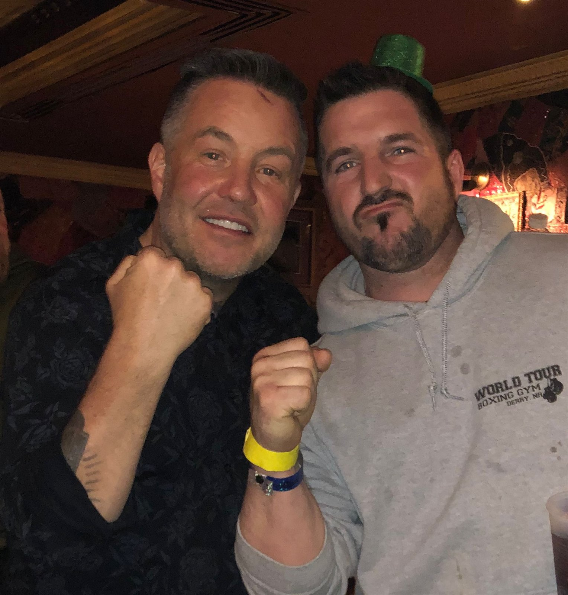

USA wrestling, MMA, and the chapter that taught Barry how to survive.
Barry Billcliff's athletic history adds an important piece to the public profile: elite wrestling, the near-miss Olympic track, martial-arts training, injury, and an early Florida chapter where a mentor helped him turn a hard break into discipline.

Competition, discipline, injury, and recovery are part of Barry's broader life story.
USA wrestling
The Kurt Angle crossroads.
Barry is known in his own circle for having wrestled at a level where the United States team and Olympic-track competition were part of the story in the late 1990s. In Barry's account, one of the defining crossroads came through repeated losses to Kurt Angle, the wrestler who would go on to win Olympic freestyle gold in 1996 and later become famous in WWF and WWE.
The point is not to rewrite Olympic history. It is the opposite: the public record shows how thin the margin can be at that level. Barry describes that chapter as a reminder that a few matches, a few months of training, or a few different rules can change the shape of an entire life. Angle advanced into Olympic and professional-wrestling fame; Barry's path moved through injuries, fighting, work, survival, business, and reinvention.
Public context: Kurt Angle's official biography identifies him as a 1996 Olympic gold medalist and professional wrestler; the rest of this page presents Barry's personal history and account.
MMA After Wrestling
After Barry's wrestling career and multiple injuries, he moved into mixed martial arts. He studied at a martial-arts academy out of Miami with Angel Gonzalez, attended a Gracie training camp in Rio de Janeiro, and continued in MMA for roughly three years.
That period brought some memorable wins, but it also brought more injuries. It was another chapter where Barry learned the difference between toughness and long-term cost.
From Competition To Teaching
Barry's combat-sports background later connected to teaching and one-on-one training. At night, he taught jujutsu and adult classes, turning the skill that had shaped him into something he could use to help others train.
The same pattern shows up elsewhere in his life: learn the hard thing, survive the hard thing, then teach or build from it.
Florida chapter
A license problem became a survival story.
Barry's early law-enforcement trouble began around driving and a suspended license after a sophomore-year high-school accident. He says he did not stop driving because he still had to get to school, tournaments, work, and the places that kept him moving.
The harder part of the story came in Florida. Barry says he returned from a tournament in Miami and found the house empty, locked, sold, and deserted, with his belongings stacked outside near the trash. He could only take what fit into an old 1986 Chevy Camaro that he was trying to keep running while learning basic mechanics. A pillow, blanket, and a few essentials made it into the car; trophies, certificates, baseball cards, comics, and much of his childhood were left behind.
It is a rough story, but it explains something important: Barry's early adulthood was not a clean runway. It was a scramble to find a place to sleep, a way to eat, and a way to keep training and working.
Mentorship
Grand Master Peter Lee and the Ridgewood Avenue studio.
Barry says the person who helped him through that chapter was Grand Master Peter Lee, who operated Peter Lee's karate studio at 527 Ridgewood Avenue in Daytona Beach, Florida. Peter Lee had built a small upstairs apartment above the studio floor and allowed Barry to stay there.
Barry did chores, repairs, painting, and property work around the studio for food money, while also teaching jujutsu and adult one-on-one classes at night. The studio became more than a place to train. It became shelter, work, discipline, and a bridge out of a period when Barry had very little stability.
Legal spiral
The studio burglary, the arrest, and the move north.
Barry says one night he heard noises downstairs at the karate studio and found a burglar stealing from the building. According to Barry's account, the burglar produced a knife and tried to stab him. Barry disarmed the assailant, broke the assailant's wrist in the struggle, held him until police arrived, and the assailant was arrested.
Barry says the story took a turn weeks later when police returned with a warrant and arrested him for assault and battery because of the injury to the assailant's wrist. His Camaro was towed to impound. After bailing out, Barry made the kind of survival-driven decision that made everything worse: he retrieved the car from the impound yard without permission, putting himself back on law enforcement's radar while he was already dealing with the license problem.
From there, Barry describes a cycle of trying to get to school while avoiding police attention because he was not licensed to drive. He says there were days when the goal was simply to make it onto school property, where he believed he would be safe long enough to get through the day. Eventually, police caught up to him, charged him with driving without a license, and he spent 14 days in jail.
That is when Peter Lee stepped in again. Barry says Peter tracked down Barry's biological father, Jim Billcliff, in New Hampshire and told him what was happening. Jim flew to Florida, picked up Barry and the vehicle, and drove them back to New Hampshire so Barry could start over. That move became the beginning of the New Hampshire chapter where Barry still lives today.
Why this belongs in the profile
The athletic story is part of the same larger record.
Barry's public story should not be reduced to one case, one headline, or one business. The wrestling and MMA years explain the discipline, pain tolerance, competitiveness, and survival instinct that later show up in aviation, entrepreneurship, media, technology, charity work, and the effort to correct the public record.